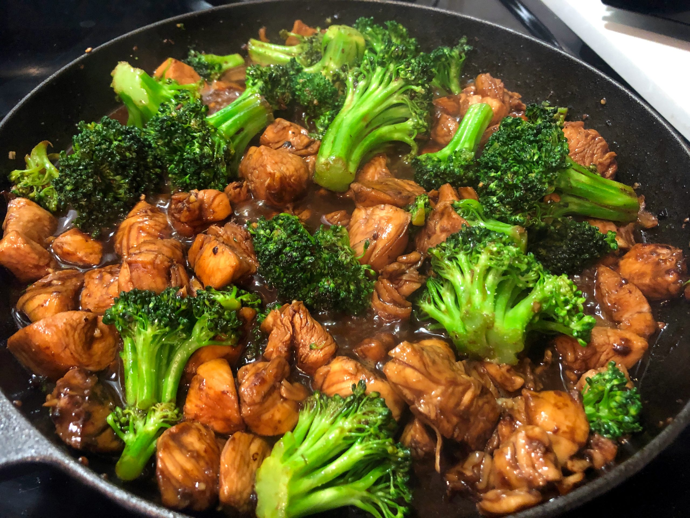

Single Serving Chicken with Broccoli and Rice

Ingredients
- Chicken Tenderloins
- Broccoli Crown
- 1 Cup Jasmine Rice
- Your favorite asian/bbq sauce
Steps
- Add 1 cup of Jasmine Rice to rice cooker
- Place chicken in pan on stove or grill and cook over high heat until fully cooked
- Cut up broccoli crown into smaller pieces and place in water in a pan on the stove
- Cook broccoli over high heat until it is soft enough for a fork to slide in
- Plate rice from the cooker next to chicken and a scoop of broccoli
- Add your favorite sauce for some extra yummy flavor